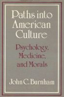

<body bgcolor="#FFFFFF" text="#000000" link="#0000FF" vlink="#CC0000" alink="#CC0000"><center><hr width="350" size="1" align="center" noshade>Classic essays that have greatly influenced the cultural interpretation of American society<hr width="350" size="1" align="center" noshade><p><a href="https://cdcshoppingcart.uchicago.edu/Cart/ChicagoBook.aspx?ISBN=9780877225058&&PRESS=temple" target="_top">Buy this book!</a> | <a href="https://cdcshoppingcart.uchicago.edu/Cart/Cart.aspx?PRESS=temple" target="_top">View Cart</a> | <a href="https://cdcshoppingcart.uchicago.edu/Cart/Cart.aspx?PRESS=temple" target="_top">Check Out</a></p><p></p></center><!--none//--><h1>Paths into American Culture</h1>
<h3>John C. Burnham</h3>
<P>cloth 0-87722-505-2 $39.95, Dec 87, <FONT COLOR=#990033>Out of Print</FONT>
<BR> 140&nbsp;tables
</P><p>In this volume, a major historian of American culture assembles for the first time a number of his classic essays which have greatly influenced the cultural interpretation of American society. Many of these essays have helped shape significant areas in recent historiography, particularly the history of venereal disease, morals, behaviorism, psychoanalysis, and popular psychology. A new essay on the historiography of sex is included. Original introductory material, editorial transitions, and a conclusion join these chapters in intellectual and social history in making a strong case for a cultural approach to America�s past.
<BR>&nbsp;<h2>Contents</h2><P>
<p>1. The Fragmenting of the Soul: Intellectual Prerequisites for Ideas of Dissociation in the United States
<br>2. The Mind-Body Problem in the Early Twentieth Century
<br>3. On the Origins of Behaviorism
<br>4. The Medical Origins and Cultural Use of Freud�s Instinctual Drive Theory
<br>5. The New Psychology: From Narcissism to Social Control
<br>6. The Influence of Psychoanalysis upon American Culture
<br>7. American Historians and the Subject of Sex
<br>8. How Recent Historiography Vindicates Ditzion�s Approach to the History of Sex
<br>9. Medical Inspection of Prostitutes in America in the Nineteenth Century: The St. Louis Experiment and Its Sequel
<br>10. The Progressive Era Revolution in American Attitudes Toward Sex
<br>11. New Perspectives on the Prohibition "Experiment" of the 1920s
<br>12. Psychiatry, Psychology, and the Progressive Movement
<br>13. Medical Specialists and Movements Toward Social Control in the Progressive Era: Three Examples
<br>14. The Cultural Interpretation of the Progressive Movement
</P><BR>&nbsp;<H2>About the Author(s)</H2>
<P><b>John C. Burnham</b> is Professor of History and Lecturer in Psychiatry at The Ohio State University.</P>
<BR><H2>Subject Categories</H2>
<p><A HREF="/tempress/american.html" TARGET="_top">American Studies</a>
<BR><A HREF="/tempress/psycho.html" TARGET="_top">Psychology</a>
</p>
<BR><h2 class="inpageheading">In the series</H2>
<P><I><a href="http://www.temple.edu/tempress/am_civ.html" onMouseOver="window.status='Click for other books in this series!'; return true;" onMouseOut="window.status=''; return true;" target="_top">American Civilization</a></i>, edited by Allen F. Davis.
</p><p>The focus of <i>American Civilization</i>, edited by Allen F. Davis, is American cultural history. In keeping with the interdisciplinary work in this field, which characteristically brings together art history, literary history and theory, and material culture, the titles in this series cover diverse aspects of American experience&#151from attitudes toward death to twentieth-century design innovations to images of country life in art and letters to trade unions' reliance on religious discourse. The series has been a pioneer in presenting work that uses photographs as historical documents and from its inception has been firmly committed to women's studies. As the first university press series in the field, <i>American Civilization</i> provided the inspiration and the standard for much of the interdisciplinary work developing in the contemporary academy.</p>
<p align="center"><a href="https://cdcshoppingcart.uchicago.edu/Cart/ChicagoBook.aspx?ISBN=9780877225058&&PRESS=temple" target="_top">Buy this book!</a> | <a href="https://cdcshoppingcart.uchicago.edu/Cart/Cart.aspx?PRESS=temple" target="_top">View Cart</a> | <a href="https://cdcshoppingcart.uchicago.edu/Cart/Cart.aspx?PRESS=temple" target="_top">Check Out</a></p><p><font face="Arial" size="1"><a href="copyright.html" onMouseOver="window.status='Web Copyright Policy';return true;" onMouseOut="window.status=''" title="Web Copyright Policy">&copy;</a> 2015 <a href="http://www.temple.edu" target="new" onMouseOver="window.status='Link to Temple University home page';return true;" onMouseOut="window.status=''" title="Link to Temple University home page">Temple University</a>. All Rights Reserved. http://www.temple.edu/tempress/titles/491_reg.html</font></p>